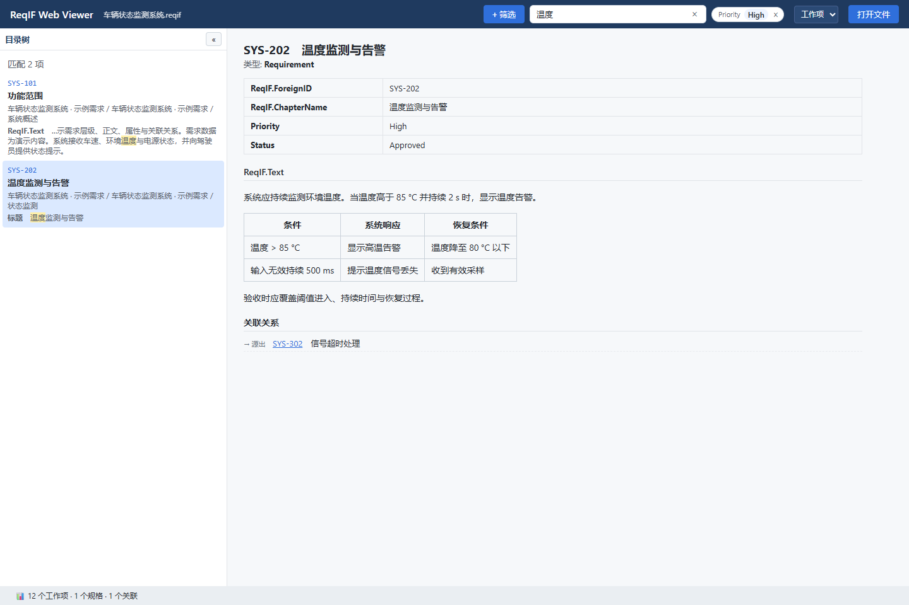

文档与工作项双视图
目录树与正文联动定位。文档视图支持段落、列表、表格，以及纯文本和富文本正文字段切换。
打开本机的 ReqIF / ReqIFz 文件，按文档层级阅读需求，搜索正文、筛选属性并查看关联关系。文件解析和附件读取都在当前浏览器中完成。

需求交换文件把章节、正文、属性与附件放在一起。评审时需要连续阅读，核对时又要通过 ID 或关键词快速找到某一条需求。
ReqIF Web Viewer 将文档阅读和工作项详情放在同一个网页中。通过浏览器选择文件即可开始，也能下载源码后打开 index.html 离线使用。
文档视图呈现需求上下文，工作项视图集中展示单条记录。
目录树与正文联动定位。文档视图支持段落、列表、表格，以及纯文本和富文本正文字段切换。
搜索 ID、标题和正文，支持全部或任一关键词匹配。结果显示命中字段、高亮摘要和章节路径。
查看枚举、日期、数值等属性，以及需求的出入向关联。点击关联条目可继续查看对应工作项。
压缩包中的图片进入可见区域后加载，其他附件点击后读取和下载。正文阅读先于附件解压。
关键词与属性筛选可以组合使用。示例在搜索「温度」的同时筛选 High 优先级，并打开匹配工作项，核对阈值、恢复条件与关联需求。

在线使用无需安装运行环境；关闭页面后，可再次选择本机文件继续查阅。
进入在线工具，点击「打开文件」或将文件拖入页面。
ReqIFz 包内应包含一个 ReqIF 主文件，可附带图片和其他附件。
使用目录、搜索、筛选或关联条目定位需求，并在两种视图间切换。